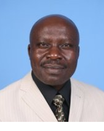
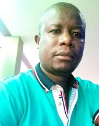

Start of Main Menu
-
 Energy Technologies Limited
Energy Technologies Limited
Energy Technologies LimitedYou are in:
Start of main content
SPECIALISED EXPERIENCE Complete Design and Construction of Electrical Power Systems up to 132 kV Operations and Maintenance of Power Systems and equipment up to 132 kV Complete Electrical Power Project Management from proposal, tendering, procurement, mobilization, implementation, commissioning, and performance evaluation. Budgeting and Budget control CAPABILITIES Design: Interpretation and conversion of general terms of reference into a concrete and workable electrical system, with complete technical specifications. Interpretation of bills of quantities and technical specifications and drawing up actual list of materials for project implementation Construction: Complete supervision of power systems project implementation including construction of distribution and transmission lines up to 132 kV lines, substation construction up to 132 kV and power system connections to commercial and industrial units. Management: Total site management of large workforce, plant, equipment, machinery and tools. PROFFESSIONAL BACKGROUND 1986 – Obtained a B. Sc. (hons) degree in electrical engineering from the University of Nairobi. 1993 – Attended a two-month course at the British Council in Nairobi on Business Communication Skills. 1995 – Attended a one-month course in Arusha, Tanzania, on distribution transformer manufacture and maintenance, organized by ABB Tanelec. 1996 – Attended a two-week course in Pretoria, South Africa on power transformer manufacture and maintenance, organized by ABB Powertech Transformers. 1997 – Attended a one-week course in Cairo, Egypt on energy meters organized by ABB Metering Systems. 1997 – Took a comprehensive management course organized by ABB Kenya 1999 – Attended a one-week course in Nairobi on corporate financial management organized by ABB Kenya WORK EXPERIENCE Currently – The Managing Director of Energy Technologies Ltd. April 2008 to Sept 2008 - With Electro Tech as the site Manager responsible for the complete electrical and communications systems installation at Olkaria’s Orpower III Geothermal Power Plant Extension Project. April 2006 to May 2007 – with Siemens Ltd. Kenya as the Project Manager for the KPLC World Bank funded Loss Reduction Project implementation for Babadogo and Bahati substations. The project involved the construction of 2x23MVA substations at Bahati and Babadogo, laying and connecting approx. 5 km of 11 and 66 kV cables and constructing approximately 10 km of 11 kV overhead lines 2004 TO 2005 – With Spentech Engineering Ltd., an electromechanical engineering company with the capacity and capability to carry out project implementation and management. 2003 TO 2004 – With ABB Kenya as the Business Development Manager 2000 TO 2003 – With ABB Uganda as the Business Development Manager, doubling up as the Projects Manager. MAJOR PROJECTS HANDLED: 1. Managed and successfully completed a US$ 2.3m, 150 km 33 kV line-construction project. 2. Managed and successfully completed a US$ 1.8m substation rehabilitation and extension project. 1. Managed and successfully a 130 km fiber optic cable sky wrap project.
ACADEMIC QUALIFICATIONS 1967 – 1970: University of East Africa-Nairobi B.sc. Electrical Engineering PROFESSIONAL QUALIFICATIONS • Registered Engineer, Engineers Registration Board, Kenya. • Member, Institution of Engineers of Kenya. • Member of the Institution of Electrical Engineers (UK) WORKSHOPS AND TRAININGS • In-house training with East African Power & Lighting Co. Ltd. • Trained with GEC Measurements (Stafford) on Protection relays • Trained at Brown Boveri and Co relay centre in Baden, Switzerland • Trained at ASEA relay centre in Vasteras, Sweden WORK EXPERIENCE August 2005 to date Syldon and Partners Consulting Engineers Ltd. Associate responsible for power sub-stations and associated works. July 1995 to date Senior partner with West consult. Consulting in Electrical and Mechanical Engineering services in Kenya. Some On-going Projects a) Project Manager for the ongoing SCADA/EMS upgrading project supplied by ABB for Kenya Power and Lighting Company Ltd. in Kenya. The project Involves Site Survey, design, testing and commissioning of the SCADA system In all KPLC substations and Control Centers throughout the country b) Electrical consultant with WESTCONSULT carrying out the upgrading and Rehabilitation of Jomo Kenyatta International Airport facilities. As the Electrical consultant. c) Electrical consultant with WESTCONSULT carrying out the Completion works For Nyanza Provincial Headquarters building d) Teamed up with DECON Engineering Consultants in the Rural Electrification Master plan Upgrade project for the Ministry of Energy in Kenya. e) Teamed up with Global Synergy Link and Norplan Consultants in the ongoing Project for consulting services for upgrading and optimization of the two Kiambere 75MW hydro generating machines for KENGEN. f) Consulting services for Athi River Mining 66/3.3kV 10MVA transformer Installation works at Athi River, Kenya. g) Electrical Consultancy work for the 2x23MVA, 132/6.6 transformer substation for MAWENI Cement factory in Tanga, Tanzania
WORK EXPERIENCE: 2011 To date: WITH ENERGY TECHNOLOGIES LTD as a director in charge of Operations. While in joint venture with Aquascope Services Ltd we have handled the following projects: 1. Complete electromechanical Installation and testing of 1x23MVA, 132/11 KV substation at Kamburu on behalf of AEE As of Spain who was the main contractor. 2. Complete electromechanical installation and testing of a 132 KV switching station at Naivasha substation on behalf of AEE AS of Spain. 3. Complete electromechanical installation and testing of the first ever GIS substation at the City Square substation, Nairobi. The project is scheduled for completion at the end of June 2013. 2006 – 2008: Worked with ABB/AB Sweden based in Kenya on SCADA/EMS project for KPLC/KENGEN. The project involved designing, assembling, interfacing, installation, testing and commissioning of 80 sub-stations ranging from 220KV, 132KV, 66KV, 33KV, &11KV. ROLE PLAYED AS DESIGNER: 1. Designing of signals tree from the process to Remote terminal unit (RTU) like Commands, alarms, indications and measurements 2. Designing of station layout diagrams that includes; single line diagrams, circuits, and wiring Electronics cabinets. 3. Designing of RTU hardware tree signals and match it with signal tree 4. Generating of signals address to the RTU 5. Generating of Excel import sheet to down load from the PC to RTU. 6 .Building of SCADA Facilities template 7. Installation on interposing relays for digital inputs and digital outputs. 8. Installation of instruments cables from RTU electronics cabinets to the Interfacing terminals on the process (plant) SCADA ESSENTIAL JOB FUNCTION • Performing complex switching to more power safety, within and between distribution and transmission with voltage range between 11Kv to 220Kv • Performing operation tests and maintenance on transformers, breakers, isolators and other substation equipment’s • Complying with all applicable Kenya power Lighting (KPLC) reliability standards requirements and ASEA BROWN BOVERI (ABB) reliability standards requirements. • Conducting tests for the proper operation of all protective relays schemes for equipment and bars bus. • Use a wide variety of complex test equipment in trouble shooting procedures and testing equipment for proper operation. • Testing and calibration, a variety of relay, meters, transducers, tone equipment, battery charging system and other electric/electro-mechanical equipment. • Maintaining tests and calibration, the utility authority’s main metering installation for importing power. • Testing installation and maintenance of the SCADA computer system both master and remote stations and the U.P.S system supplying the master. • Performing routine station inspections and files reports. • Updating blueprints and schematics to an ’as built’ status along with a variety of other records kept on duties. • Installation and maintenance of fiber optic (FOX 540) lines and related equipment in substations. • Assisting other departments with their more complex systems such as power plant relays, plant transformers, energy services, back-up generator and all SCADA users. OTHER OVERALL RESPONSIBILITIES ON SUB-STATION, GENERATING STATION. Inspection, supervision, installation, assembling and testing • Controls, protection and supervisory of different kinds of relays like trip relays on protection panels. (Wiring and interfacing the circuits and pre- commissioning test). • Assembling of the power Transformer, performance of the pre-commissioning tests, ratio measurements, phase displacements checks load losses impedance voltage and short circuit impendence, insulation resistance of the transformer and measurement of no load and current. • Installation of the SF6 breakers, Air Circuit breakers, vacuum circuit breakers, Ring main, and performance of pre-commissioning tests, circuit control. • Installation of the battery charges, energizing. Synchronizations checks of the generation and the Transmission line • Supervision and inspection of the turbine and generation components installation, instrumentation, earthling system, assembling of core winding, voters, excitation circuits etc. • Relay function tests on transformer protection, lines, bus-bars and feeders • System monitoring by use of digital meters and testing • Installation, testing of current, voltage and capacitive voltage transformer and pre-commission SOME OF THE MAJOR PROJECTS DONE WITHIN EAST AFRICA (SIEMENS LTD) 1.1 2008 APRIL TO DECEMBER: KANAMAI, WATAMU & MARIAKANI (MOMBASA) Installation, supervision, testing and pre-commissioning of 33kv to 11kv system. The project was to upgrade energy system in Mombasa/Kenya ROLE PLAYED Supervision of all electrical works including equipment’s, materials and workers Site-coordination between the client and the sub-contractor. Take part in making of Bill of Quantities on the materials. Engage on safety regulation and train workers on the rules pertain the safety Carry out relay function checks e.g. (differential relay SIPROTEC 7UT612 and Distance relay SIPROTEC 75A525 SIEMENS)
End of main content